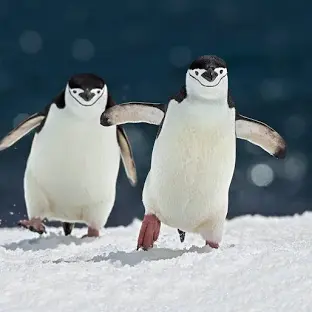
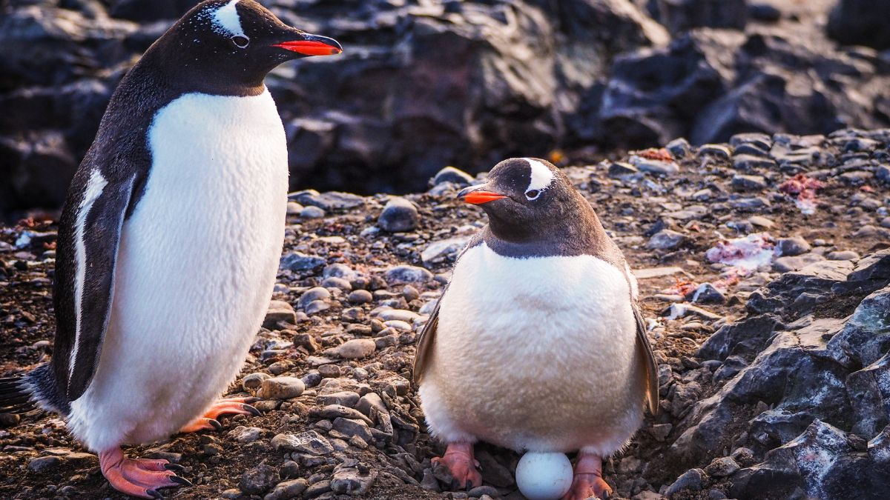
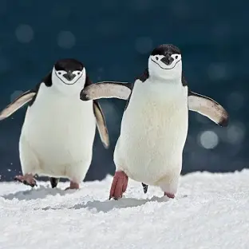
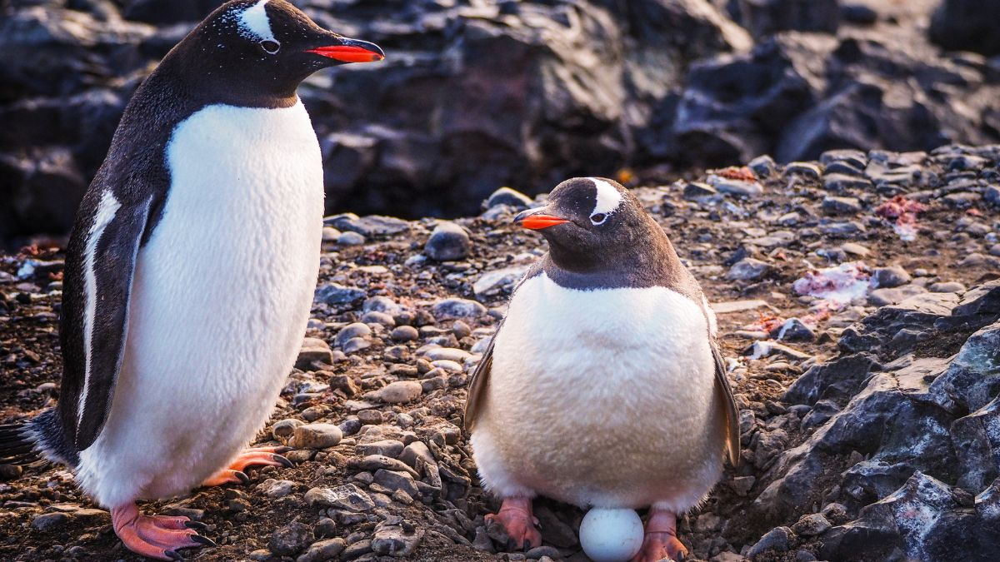

A pingvinalakúak (Sphenisciformes) a Madarak (Aves) osztályának egyik rendje, melybe csak egyetlenegy család, a pingvinfélék (Spheniscidae) tartozik.
2014-ben 48 jellegzetes madárfajnak feltérképezték a teljes genomját, köztük a pingvinét és a viharmadár nevű testvértaxonját ebből a kutatásból kitudódott, hogy e két madárrend körülbelül 60 millió évvel ezelőtt vált szét.
A pingvinalakúak és a viharmadár-alakúak (Procellariiformes) alkotják az úgynevezett Austrodyptornithes csoportot. Szinte kizárólag a Föld déli féltekéjén élnek, többnyire Dél-Amerika mérsékelt övi partvidékén és a környező szigeteken.
Két fajuk az Antarktisz partvidékén telepedett meg. A hideg tengeráramlatokkal jóval északabbra is eljutnak: több fajuk a szubtrópusokon, sőt, egy az Egyenlítő vidékén honos.

| Fajta | Magasság | Súly (kg) | Élőhely |
|---|---|---|---|
| Adélie pingvin | 45–60 cm | 3,5–4,5 | Antarktisz kontinens cirkumpoláris része |
| Afrikai pingvin | 63–68 cm | 2,7–3,6 | Dél-Afrika és Namíbia |
| Fjordlandi pingvin | kb. 60 cm | 2,7–3,1 | Szubantarktiszi szigetek, Új-Zéland |
| Galápagosi pingvin | kb. 53 cm | 2,3–2,7 | Galápagos-szigetek |
| Királypingvin | kb. 93 cm | 13–20 | Szubantarktiszi és antarktiszi szigetek |
| Magellán-pingvin | 35–55 cm | 3–7 | Közép-Chile és Közép-Argentína |
Pingvinek főként vízi élőlényekkel táplálkoznak. Étrendjük fajonként és élőhelyenként eltérhet, de mindig friss zsákmányra van szükségük az energiához.
Egyes pingvinfajok inkább krillet, mások főként halat fogyasztanak. Például a császárpingvin halat és tintahalat eszik, míg az Adélie pingvin főleg krillet.


 
Kifejlődésük

Kifejlődésük
A pingvinek rendszerezése még nem teljesen tisztázott, ezért a tudósok között vannak eltérő vélemények.
Egyes kutatások szerint a modern pingvinek elnevezését módosítani kellene, de a legtöbb leírás ma is a hagyományos, Linné-féle rendszert használja.
A pingvinek nagyon régen váltak el a többi madártól. Legkorábbi kövületeik a harmadkorból származnak, és voltak köztük akár emberméretű fajok is.
A fosszíliák alapján méretük rendkívül változatos volt.
Őseik valószínűleg a kréta–tercier kihalás után jelentek meg az Antarktisz és Új-Zéland környékén. Bár a mai pingvinek röpképtelenek, feltételezhető, hogy legkorábbi őseik még tudtak repülni.
Wikipédia - https://hu.wikipedia.org/wiki/Pingvinalak%C3%BAak
Chatgpt - https://chatgpt.com/c/693e8b35-3fd8-832f-9e76-9dfc25c23bfc
Pingvin infok - https://pingvinek.ewk.hu/pingvinfajok/
Táplálkozása - https://mit-eszik.hu/mit-eszik-a-pingvin/
Érdekességek - https://www.haziallat.hu/madar/diszmadarak/erdekesseg-pingvinek/4665/